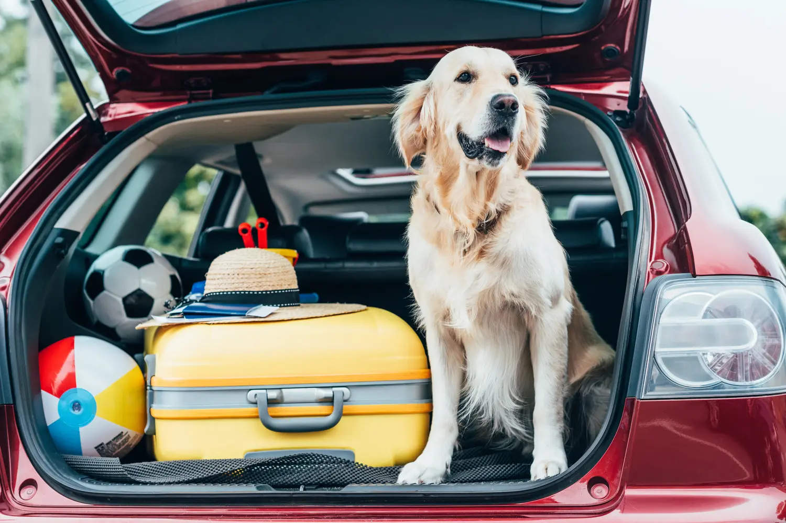
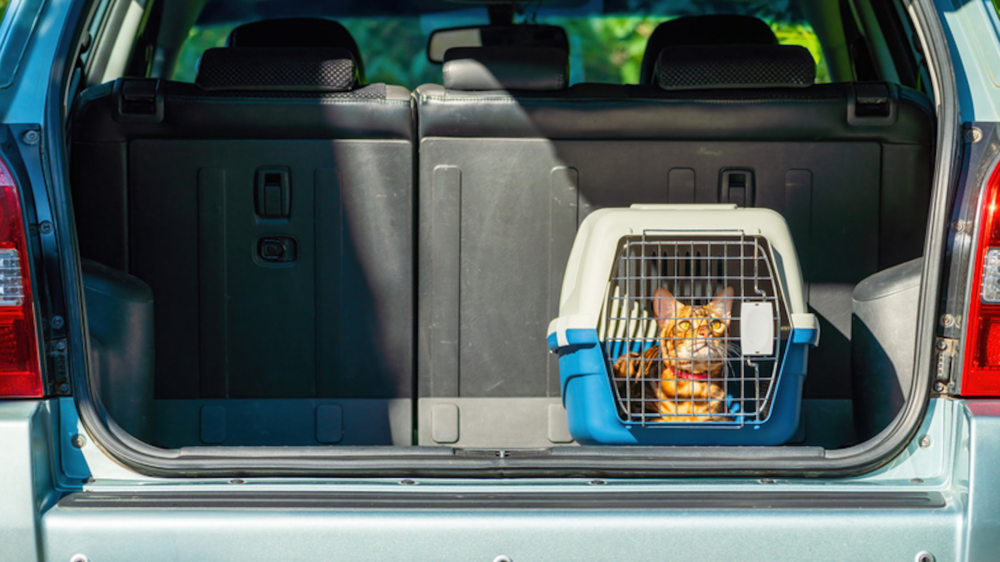
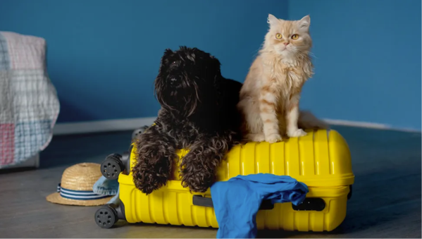
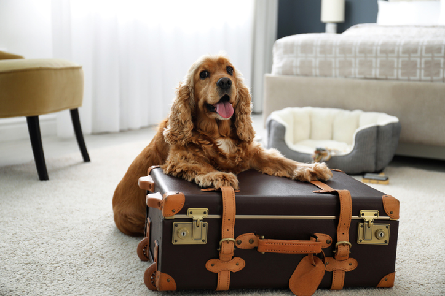

Get Your Pet Used to the Car and Carrier
Before taking your pet on a long car ride, give them time to get comfortable with the vehicle and their carrier. Start by allowing them to explore the parked car or carrier at their own pace, using treats, toys, and praise to create a positive association. Gradually introduce short drives before attempting longer trips. This can help reduce anxiety, motion sickness, and fear associated with traveling. Always make sure your pet’s carrier is secure and appropriately sized for them.

Protect Your Car Seats
Traveling with pets can sometimes lead to muddy paw prints, fur, scratches, and unexpected messes. A waterproof or washable seat cover can help protect your vehicle’s interior and make cleaning up much easier after your trip. Hammock-style seat covers can also help prevent your dog from falling into the footwell. However, seat covers are not a substitute for proper pet restraints, so make sure your pet is secured with a suitable carrier, harness, or other crash-tested travel restraint.

Never Leave Your Pets Unattended!
Never leave your pet alone in a parked vehicle, especially on warm or sunny days. Temperatures inside a car can rise rapidly, putting animals at risk of heatstroke, even when the windows are slightly open. Cold weather can also be dangerous, as vehicles can become very cold. Whenever possible, bring your pet with you when leaving the vehicle, or have another responsible person stay with them in a safe environment. If you’re traveling with your pet, plan ahead for stops where they can safely accompany you.

Clean Up After Your Pets and Stop for Breaks
Pets may need bathroom breaks, water, exercise, or a chance to stretch during a car journey. Plan regular stops, especially on longer trips, and always keep your pet on a leash when outside the vehicle unless they are in a secure, designated enclosed area. Bring waste bags, water, a portable bowl, and cleaning wipes to handle any accidents or messes. Keeping your pet and their surroundings clean helps make the journey more comfortable for everyone. Never allow your pet to exit the vehicle until they are safely leashed or otherwise securely restrained.

Try to Keep Trips Short
For pets that are new to car travel, or those that experience anxiety or motion sickness, shorter trips can be easier to manage. Begin with brief drives and gradually increase the distance as your pet becomes more comfortable. Whenever possible, avoid unnecessary travel during extreme weather and schedule longer journeys around your pet’s needs. If your pet shows signs of distress, such as excessive drooling, panting, vomiting, or persistent whining, stop somewhere safe and assess the situation. If these symptoms continue or are severe, contact your veterinarian for advice.
Final Reminder
A safe car journey starts before you turn the key. Make sure your pet is properly restrained, bring water and other essentials, plan for breaks, and never leave them unattended in a parked vehicle. With a little preparation, you can help make every trip safer and more enjoyable for both you and your pet.